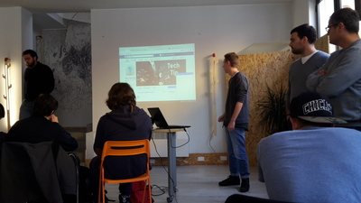

On April 19th our school class went to Impact Hub once again. The day began trying to understand the meaning of “co-working space”, that is a place where people, starting from their knowledge and experience, work together to create and improve their projects.
Later we spoke about social networks and their growing influence in companies; it came out that the most used social network (even in the working environment) is Facebook, thanks to its 25 millions monthly users in Italy. When it comes to web sites, SEOs (Search Engine Optimization) are very important, they are methods used to optimize web sites.
After that, we split into some groups to create a Facebook page based on a subject of our choice and, after we created it, we presented it to the other groups. The Facebook page of my group was about a farm in the country in which cured meat and cheese are sold. We imagined that a good way to increase the reputation of the farm was to organize an event during which the audience could have a good time playing games and funny activities, such as a race with piggies. This idea obtained a very positive outcome, indeed we won!